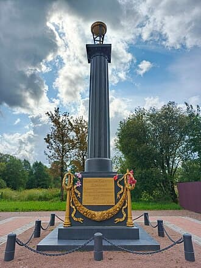
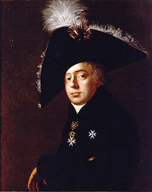
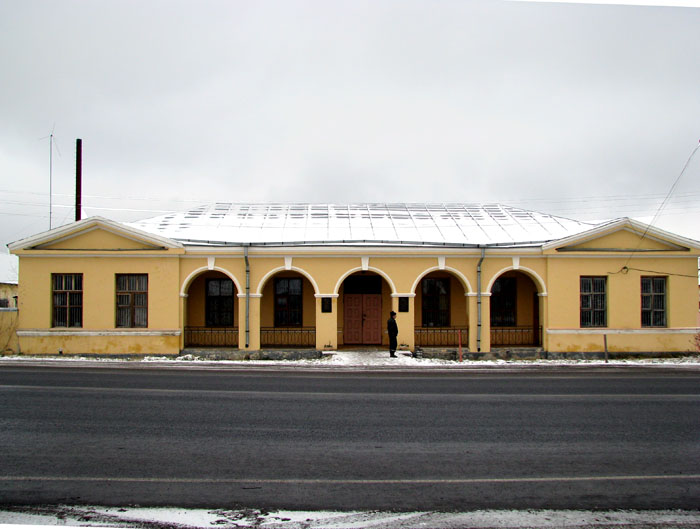

В деревне Чирковицы, на Таллинском шоссе стоит чугунный памятный столб, удивляющий архаичностью и инородностью по отношению к окружающему.
На памятнике надпись: "Николаю Никитичу Демидову родившемуся в Чирковицах 9 ноября 1773 скончавшемуся в Флоренции 24 апреля 1828 года. Признательные Дети".
История такая. Возвращался из заграничного путешествия Никита Акинфьевич Демидов с супругой, внук легендарного Никиты Демидова, отправленного Петром I на Урал поднимать чугунолитейное производство.
Супруге приходит время рожать, а до Санкт-Петербурга еще 80 верст. В результате на почтовой станции в Чирковицах появляется на свет Николай Никитич Демидов, наследник миллионов, в дальнейшем видный государственный деятель, тайный советник и меценат.
Через 10 лет после его смерти благодарные потомки установят на месте рождения этот памятник, построят кирпичную церковь и сельскую школу.
Каким мистическим образом сохранился памятник? Могучие каменные стены храма и школы превращены в руины. Сколько удивленных взглядов касались его за 200 лет, без малого? Невозможно было проехать без остановки на почтовой станции по Ревельскому тракту, невольно не обратясь к памятнику. Каким образом не переплавили его ни большевики, ни немцы, окупировавшие область в Отечественную, ни колхозные активисты, ни пионеры-сборщики металлолома?

Почтовые станции были построены через каждые 40 верст для смены лошадей и отдыха путешественников, взамен шведских. Ближайшие - в Каськово в сторону Петербурга, и в Ополье - в сторону Таллина.

Постоялые дворы на Ревельском тракте: Кипень - Каськово - Чирковицы - Ополье - Ямбург. Это прототипы современных аэродромов. Транспортные хабы XVII–XIX столетий столетий.
В XVII веке и ранее такие станции назывались Ям, а система почтового сообщения - ямской гоньбой.
События Пушкинского "Станционный смотритель" происходят в Выре, якобы. Это рядом. Но почтовый тракт на Киев строился позднее, и на опыте тракта на Ревель.
"Привычно чокаются здесь Поэт с фельдъегерем — гонимый и гонитель"
Архитектор станций - Луиджи Руска, один из основных исполнителей дворцовых построек Санкт-Петербурга и пригородных дворцои XVIII–XIX веков.